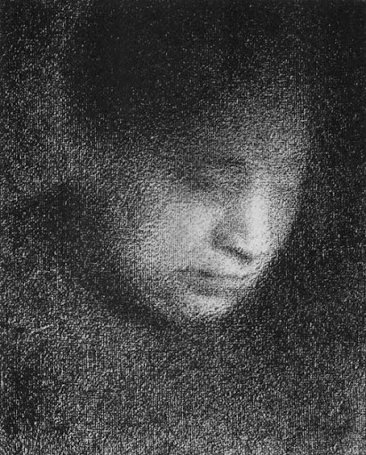
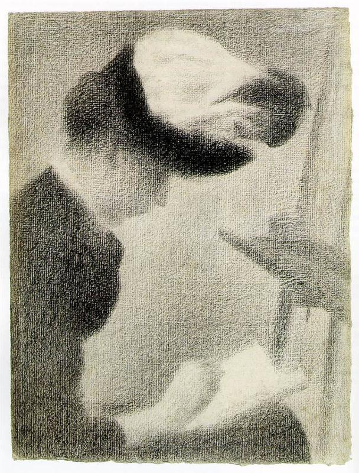
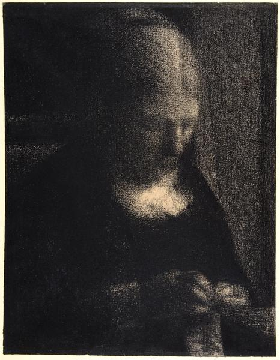
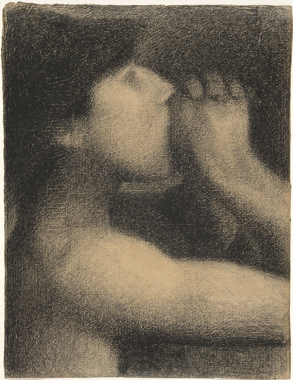

Seurat is a recognized master of colors in modern art. Meanwhile, he is also an expert at sketching. Seurat's sketches are similar to his dotted paintings in the use of tiny and elegant strokes. His sketch works show the light-diffused visual effect. Below are some selected sketch artworks.
A Sunday Afternoon on the Island of La Grande Jatte
Models
The Circus